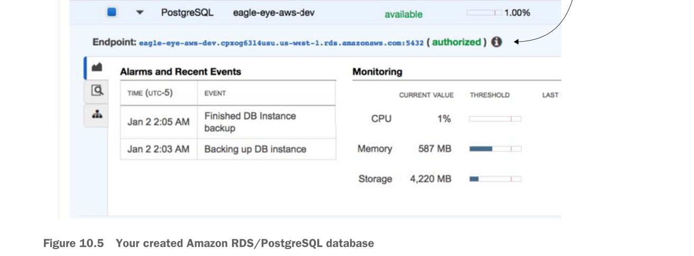

This is the endpoint you’ll use to connect to the database.
Your created Amazon RDS/PostgreSQL database
At this point, your database creation process will begin (it can take several minutes). Once it’s done, you’ll need to configure the Eagle Eye services to use the database.
After the database is created (this will take several minutes), you’ll navigate back to the RDS dashboard and see your database created. Figure 10.5 shows this screen.
For this chapter, I created a new application profile called aws-dev for each microservice that needs to access the Amazon-based PostgreSQL database. I added a new Spring Cloud Config server application profile in the Spring Cloud Config GitHub repository (https://github.com/carnellj/config-repo) containing the Amazon database connection information. The property files follow the naming convention (service-name)-aws-dev.yml in each of the property files using the new database (licensing service, organization service, and authentication service).
At this point your database is ready to go (not bad for setting it up in approximately five clicks). Let’s move to the next piece of application infrastructure and see how to create the Redis cluster that your EagleEye licensing service is going to use.
10.1.2 Creating the Redis cluster in Amazon
To set up the Redis cluster, you’re going to use the Amazon ElastiCache service. Amazon ElastiCache allows you to build in-memory data caches using Redis or Memcached (https://memcached.org/). For the EagleEye services, you’re going to move the Redis server you were running in Docker to ElastiCache.